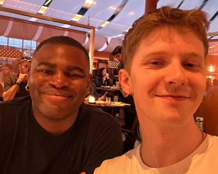

Tope on Eden
What were you hoping for? A lot of good food and for the evening not to turn into an edition of Dining Across the Divide . First impressions? Blond! Blue eyes! What did you talk about? The Bible. Judith Butler. Susan Sontag. Patti LuPone. Poetry. Squash. Musicals. Deciding whether or not to name our Pokémon (I’m pro). The cookbook club I’m in. The scavenger hunt I went on before our date. The Manosphere. Most awkward moment? When we exchanged numbers, I glimpsed his contact list. The moniker that was above my name is not suitable for publication. (We laughed about it!) Good table manners? Faultless. We ordered lots and shared everything. Best thing about Eden? He has a poet’s soul. Would you introduce Eden to your friends? Happily. Describe Eden in three words Cool, calm and collected. What do you think Eden made of you? Probably that I’m excitable and garrulous. He said I was “erudite”.
Did you go on somewhere? He had to get up early the next day to go on a boat trip, so we didn’t.
And … did you kiss? On the street?
If you could change one thing about the evening what would it be? Eden was trying to remember one of Stephen Sondheim’s songs (Could I Leave You? from Follies). Despite me insisting, he’d only do bits of the tune, and sotto voce, so I could hardly hear him! We’ll need to turn the volume up next time.
Marks out of 10? 7.
Would you meet again? We plan to.
Tope and Eden on their date
Eden on Tope
What were you hoping for? I would’ve been happy with a free meal, but I was hoping for a new connection.
First impressions? Good hug when I arrived. He wanted to order nearly everything on the menu, so we did, and I liked that. He seemed a bit nervous at first, but I was too, so that wasn’t a problem.
What did you talk about? Lorde. Mitski. Susan Sontag. Performance poetry. The concept of self-esteem. And a nice bit of gossiping.
Most awkward moment? Probably when he told me off for looking at my phone.
Good table manners? No criticisms here.
Best thing about Tope? His laugh. I liked his sense of humour; I couldn’t predict when he would find something funny, but when he did he really did.
Would you introduce Tope to your friends? I would. In fact, I texted a friend on the way home saying I think they’d get on.
Describe Tope in three words Interested and interesting.
What do you think Tope made of you? I think he’d like to get to know me better. I don’t think he fancies me that much though.
Did you go on somewhere? No, but we stayed talking in the restaurant until very late.
And … did you kiss? I never kiss on a first date …
If you could change one thing about the evening what would it be? I wouldn’t have ordered the prawns.
Marks out of 10? 8.
Would you meet again? Yes.
Tope and Eden ate at Kricket Shoreditch , London EC2. Fancy a blind date? Email blind.date@theguardian.com